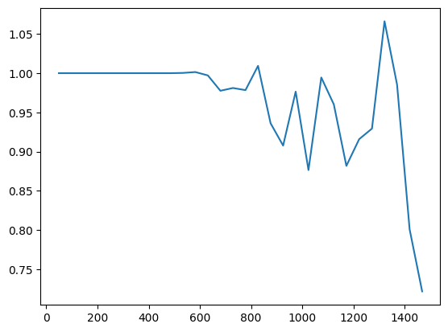
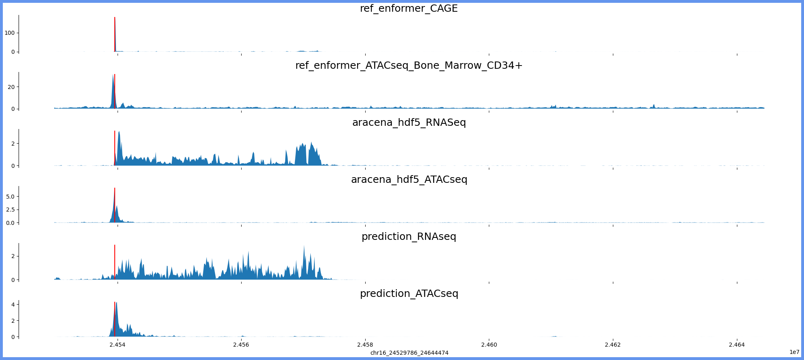
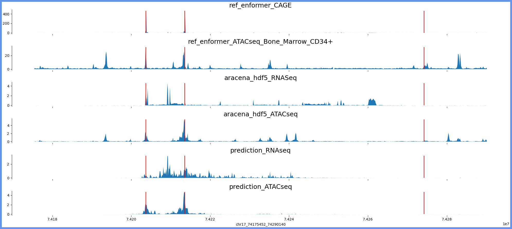
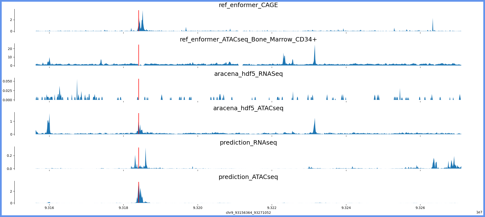
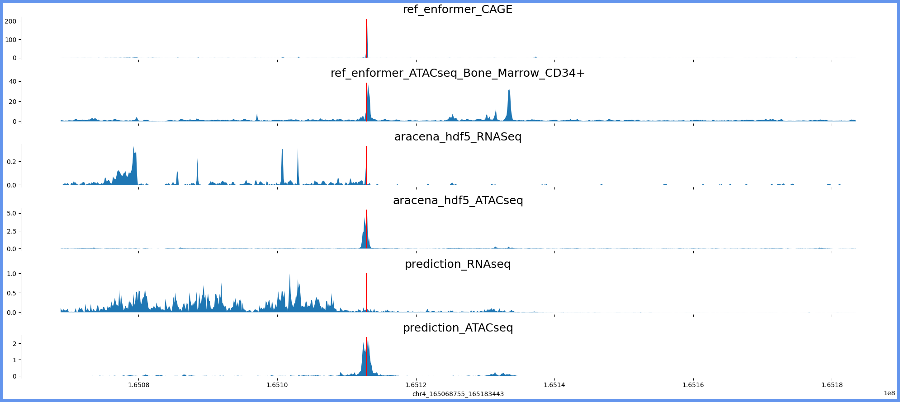
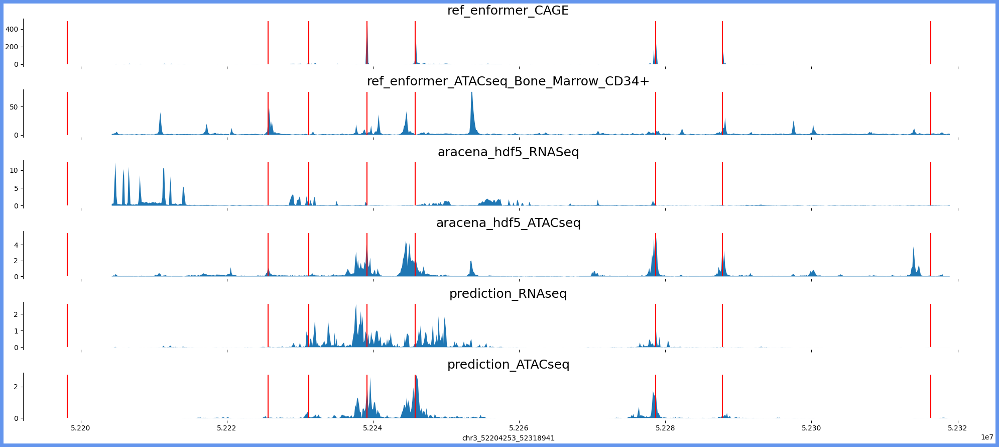
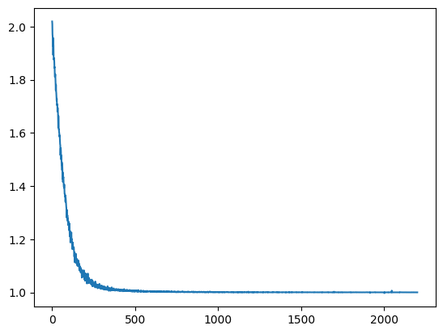

Code
import matplotlib.pyplot as plt
import seaborn as sns
import numpy as np
import pysam
import matplotlib.pyplot as plt
import numpy as np
import kipoiseq
import pyBigWig
import os,sys
import sklearn
import h5py
import pickle as pklimport matplotlib.pyplot as plt
import seaborn as sns
import numpy as np
import pysam
import matplotlib.pyplot as plt
import numpy as np
import kipoiseq
import pyBigWig
import os,sys
import sklearn
import h5py
import pickle as pkldef plot_tracks(tracks, interval, vlines,height=1.5):
fig, axes = plt.subplots(len(tracks), 1, figsize=(20, height * len(tracks)), sharex=True)
for ax, (title, y) in zip(axes, tracks.items()):
ax.fill_between(np.linspace(interval[1], interval[2], num=len(y)), y)
ax.set_title(title, fontsize=18)
ax.vlines(list(vlines),0, max(y), color="red")
sns.despine(top=True, right=True, bottom=True)
ax.set_xlabel("_".join([str(x) for x in interval]))
fig.patch.set_linewidth(10)
fig.patch.set_edgecolor('cornflowerblue')
plt.tight_layout()
import h5py
def liftover_coords(interval, source="hg19", target="hg38"):
'''
Inputs:
interval: kipoiseq interval object containing the coordinates to be converted
Outputs:
converted_coords: kipoiseq interval object containing the converted coordinates
'''
import liftover
# Initialize converter
converter = liftover.get_lifter(source, target)
converted_coords = kipoiseq.Interval(interval.chrom,converter[interval.chrom][interval.start][0][1],converter[interval.chrom][interval.end][0][1])
return converted_coords
def query_epigenome_from_hdf5(region, individual="AF20"):
import pandas as pd
import h5py
col_region = "_".join([region[0].strip("chr"),region[1],region[2]])
mapping_table = pd.read_csv("/beagle3/haky/users/saideep/projects/aracena_modeling/hdf5_training/index_files/remapped_table_filt.csv", index_col=0)
if col_region not in mapping_table.columns:
print(col_region, "not present in hdf5")
return None,"region not present in hdf5"
query_index = int(mapping_table.loc["ref-epigenome", col_region])
query_group = mapping_table.loc["group", col_region]
print(query_index,query_group)
enformer_ref_targets = f"/beagle3/haky/users/saideep/projects/aracena_modeling/hdf5_training/ref-epigenome_{query_group}_aracena.h5"
with h5py.File(enformer_ref_targets, 'r') as ert:
query = ert['ref_epigenome'][:,:,query_index]
return query, None
def query_aracena_from_hdf5(region, individual="AF20"):
import pandas as pd
import h5py
col_region = "_".join([region[0].strip("chr"),region[1],region[2]])
mapping_table = pd.read_csv("/beagle3/haky/users/saideep/projects/aracena_modeling/hdf5_training/index_files/remapped_table_filt.csv", index_col=0)
if col_region not in mapping_table.columns:
print(col_region, "not present in hdf5")
return None,"region not present in hdf5"
query_index = int(mapping_table.loc[individual, col_region])
query_group = mapping_table.loc["group", col_region]
print(query_index,query_group)
enformer_ara_targets = f"/beagle3/haky/users/saideep/projects/aracena_modeling/hdf5_training/{individual}_{query_group}_aracena.h5"
print(enformer_ara_targets)
with h5py.File(enformer_ara_targets, 'r') as ert:
query = ert['targets'][:,:,query_index]
return query, None
import ref_to_aracena_models
import torch
device = (
"cuda"
if torch.cuda.is_available()
else "mps"
if torch.backends.mps.is_available()
else "cpu"
)
saved_model_path = "/beagle3/haky/users/saideep/projects/aracena_modeling/training_runs/ref_to_aracena_cnn_lr5e-05_se2_mul10/ref_to_aracena_cnn_lr5e-05_se2_epoch9.pt"
saved_model = torch.load(saved_model_path, map_location=torch.device('cpu'))
model_type = "cnn"
if model_type == "linear":
cur_model = ref_to_aracena_models.RefToAracenaMLP()
elif model_type == "cnn":
cur_model = ref_to_aracena_models.RefToAracenaCNN()
print(cur_model.cpu())
cur_model = cur_model.to(device)
cur_model.load_state_dict(saved_model["model_state_dict"])
plt.plot(saved_model["loss"])
plt.clf()
print(saved_model["loss"].numpy())
sns.regplot(x=np.arange(len(saved_model["loss"].numpy())),y=saved_model["loss"].numpy(), line_kws=dict(color="r"))
from sklearn.linear_model import LinearRegression
LinearRegression().fit(np.arange(len(saved_model["loss"].numpy())).reshape(-1,1),saved_model["loss"].numpy().reshape(-1,1)).coef_
RefToAracenaCNN(
(model): Sequential(
(0): Sequential(
(0): BatchNorm1d(5313, eps=1e-05, momentum=0.1, affine=True, track_running_stats=True)
(1): GELU()
(2): Conv1d(5313, 24, kernel_size=(4,), stride=(2,), padding=(1,))
(3): BatchNorm1d(24, eps=1e-05, momentum=0.1, affine=True, track_running_stats=True)
(4): GELU()
(5): Conv1d(24, 24, kernel_size=(4,), stride=(2,), padding=(1,))
(6): BatchNorm1d(24, eps=1e-05, momentum=0.1, affine=True, track_running_stats=True)
(7): GELU()
(8): Conv1d(24, 24, kernel_size=(4,), stride=(2,), padding=(1,))
)
(1): Sequential(
(0): Flatten(start_dim=1, end_dim=-1)
(1): Linear(in_features=2688, out_features=10752, bias=True)
(2): Softplus(beta=1, threshold=20)
(3): Unflatten(dim=1, unflattened_size=(12, 896))
)
)
)
[0.63535774 0.6226701 0.5231746 ... 0.79878414 0.5835308 0.7378209 ]
plt.plot(saved_model["loss"][-500:])import pickle as pkl
with open("/beagle3/haky/users/saideep/projects/aracena_modeling/training_runs/ref_to_aracena_cnn_lr5e-05_se2_mul10/ref_to_aracena_cnn_lr5e-05_se2_epoch0_validloss.pkl","rb") as vloss:
validation_loss = pkl.load(vloss)
validation_loss
iters_vloss = validation_loss.keys()
vloss_vals = [validation_loss[x] for x in iters_vloss]
plt.plot(iters_vloss, vloss_vals)
tss_mapping_dict_file = "/beagle3/haky/users/saideep/github_repos/Daily-Blog-Sai/posts/2023-09-20-diagnose_training_tracks_issue/tss_mapping_dict.pkl"
tss_mapping_dict_genes = "/beagle3/haky/users/saideep/github_repos/Daily-Blog-Sai/posts/2023-09-20-diagnose_training_tracks_issue/tss_mapping_dict_gene_names.pkl"
with open(tss_mapping_dict_file, "rb") as f:
tss_mapping_dict = pkl.load(f)
with open(tss_mapping_dict_genes, "rb") as f:
tss_mapping_dict_gene_names = pkl.load(f)
loss = torch.nn.PoissonNLLLoss(log_input=True, reduction="none")
c=0
for region in tss_mapping_dict.keys():
print(region)
if c < 3:
c+=1
continue
if c==10:
break
else:
c+=1
region_split = region.split("_")
center_bp = int((int(region_split[2])+int(region_split[1]))/2)
ref_query_hdf5, flag = query_epigenome_from_hdf5(region_split)
if flag == "region not present in hdf5":
continue
ara_query_hdf5, flag = query_aracena_from_hdf5(region_split)
if flag == "region not present in hdf5":
continue
region_for_plot = [region_split[0],int(region_split[1]),int(region_split[2])]
region_browser = region_split[0]+":"+region_split[1]+"-"+region_split[2]
region_kipoi = kipoiseq.Interval(*region_for_plot).resize(896*128)
region_hg19_from_hg38 = liftover_coords(region_kipoi, source="hg38", target="hg19")
prediction = cur_model(torch.mul(torch.tensor(ref_query_hdf5).unsqueeze(0).swapaxes(1,2),1))
print(ref_query_hdf5.shape)
print(prediction.shape, torch.Tensor(ara_query_hdf5).unsqueeze(0).shape)
pred_loss = loss(prediction, torch.Tensor(ara_query_hdf5).unsqueeze(0).swapaxes(1,2))
print("loss:", pred_loss.mean())
region_for_plot = [region_kipoi.chrom,region_kipoi.start, region_kipoi.end]
print(region_browser, "genes:", tss_mapping_dict_gene_names[region], "region len:", (int(region_split[2])-int(region_split[1])))
tracks_for_plot = { "ref_enformer_CAGE":ref_query_hdf5[:,4766],
"ref_enformer_ATACseq_Bone_Marrow_CD34+":ref_query_hdf5[:,675],
"aracena_hdf5_RNASeq":ara_query_hdf5[:,0],
"aracena_hdf5_ATACseq":ara_query_hdf5[:,1],
"prediction_RNAseq":prediction.detach().numpy()[0,0,:],
"prediction_ATACseq":prediction.detach().numpy()[0,1,:]}
print(prediction.shape)
print(region_for_plot)
print(tss_mapping_dict[region])
plot_tracks(tracks_for_plot,region_for_plot,tss_mapping_dict[region])chr4_113630947_113762019
chr11_18427720_18558792
chr16_85805681_85936753
chr7_136783551_136914623
7_136783551_136914623 not present in hdf5
chr16_24521594_24652666
7 train1
8 train1
/beagle3/haky/users/saideep/projects/aracena_modeling/hdf5_training/AF20_train1_aracena.h5
(896, 5313)
torch.Size([1, 12, 896]) torch.Size([1, 896, 12])
loss: tensor(1.3551, grad_fn=<MeanBackward0>)
chr16:24521594-24652666 genes: ['RBBP6'] region len: 131072
torch.Size([1, 12, 896])
['chr16', 24529786, 24644474]
[24539566]
chr17_74167260_74298332
10 train1
11 train1
/beagle3/haky/users/saideep/projects/aracena_modeling/hdf5_training/AF20_train1_aracena.h5
(896, 5313)
torch.Size([1, 12, 896]) torch.Size([1, 896, 12])
loss: tensor(1.2311, grad_fn=<MeanBackward0>)
chr17:74167260-74298332 genes: ['RPL38', 'TTYH2', 'DNAI2'] region len: 131072
torch.Size([1, 12, 896])
['chr17', 74175452, 74290140]
[74203678, 74213571, 74274234]
chr9_93148172_93279244
13 train1
14 train1
/beagle3/haky/users/saideep/projects/aracena_modeling/hdf5_training/AF20_train1_aracena.h5
(896, 5313)
torch.Size([1, 12, 896]) torch.Size([1, 896, 12])
loss: tensor(1.0343, grad_fn=<MeanBackward0>)
chr9:93148172-93279244 genes: ['WNK2'] region len: 131072
torch.Size([1, 12, 896])
['chr9', 93156364, 93271052]
[93184139]
chr4_165060563_165191635
17 train1
18 train1
/beagle3/haky/users/saideep/projects/aracena_modeling/hdf5_training/AF20_train1_aracena.h5
(896, 5313)
torch.Size([1, 12, 896]) torch.Size([1, 896, 12])
loss: tensor(1.0329, grad_fn=<MeanBackward0>)
chr4:165060563-165191635 genes: ['TMEM192'] region len: 131072
torch.Size([1, 12, 896])
['chr4', 165068755, 165183443]
[165112860]
chr17_19514821_19645893
18 train1
19 train1
/beagle3/haky/users/saideep/projects/aracena_modeling/hdf5_training/AF20_train1_aracena.h5
(896, 5313)
torch.Size([1, 12, 896]) torch.Size([1, 896, 12])
loss: tensor(1.0329, grad_fn=<MeanBackward0>)
chr17:19514821-19645893 genes: ['SLC47A1'] region len: 131072
torch.Size([1, 12, 896])
['chr17', 19523013, 19637701]
[19533854]
chr3_52196061_52327133
19 train1
20 train1
/beagle3/haky/users/saideep/projects/aracena_modeling/hdf5_training/AF20_train1_aracena.h5
(896, 5313)
torch.Size([1, 12, 896]) torch.Size([1, 896, 12])
loss: tensor(1.2124, grad_fn=<MeanBackward0>)
chr3:52196061-52327133 genes: ['ALAS1', '', 'TLR9', 'TWF2', 'PPM1M', 'WDR82', 'GLYCTK', 'DNAH1'] region len: 131072
torch.Size([1, 12, 896])
['chr3', 52204253, 52318941]
[52198160, 52231190, 52225645, 52239158, 52245759, 52278649, 52287828, 52316319]
chr2_167285886_167416958





import ref_to_aracena_models
import torch
device = (
"cuda"
if torch.cuda.is_available()
else "mps"
if torch.backends.mps.is_available()
else "cpu"
)
saved_model_path = "/beagle3/haky/users/saideep/projects/aracena_modeling/training_runs/ref_to_aracena_cnn_lr0.0001_se3/ref_to_aracena_cnn_lr0.0001_se3_epoch0.pt"
saved_model = torch.load(saved_model_path, map_location=torch.device('cpu'))
model_type = "cnn"
if model_type == "linear":
cur_model = ref_to_aracena_models.RefToAracenaMLP(basenji_tracks=1, num_aracena_tracks=1, hidden_layer_dims=[])
elif model_type == "cnn":
cur_model = ref_to_aracena_models.RefToAracenaCNN(basenji_tracks=1, num_aracena_tracks=1)
print(cur_model.cpu())
cur_model = cur_model.to(device)
cur_model.load_state_dict(saved_model["model_state_dict"])
plt.plot(saved_model["loss"])RefToAracenaCNN(
(model): Sequential(
(0): Sequential(
(0): BatchNorm1d(1, eps=1e-05, momentum=0.1, affine=True, track_running_stats=True)
(1): GELU()
(2): Conv1d(1, 24, kernel_size=(4,), stride=(2,), padding=(1,))
(3): BatchNorm1d(24, eps=1e-05, momentum=0.1, affine=True, track_running_stats=True)
(4): GELU()
(5): Conv1d(24, 24, kernel_size=(4,), stride=(2,), padding=(1,))
(6): BatchNorm1d(24, eps=1e-05, momentum=0.1, affine=True, track_running_stats=True)
(7): GELU()
(8): Conv1d(24, 24, kernel_size=(4,), stride=(2,), padding=(1,))
)
(1): Sequential(
(0): Flatten(start_dim=1, end_dim=-1)
(1): Linear(in_features=2688, out_features=896, bias=True)
(2): Softplus(beta=1, threshold=20)
(3): Unflatten(dim=1, unflattened_size=(1, 896))
)
)
)